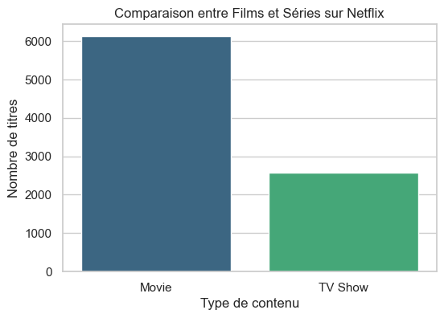
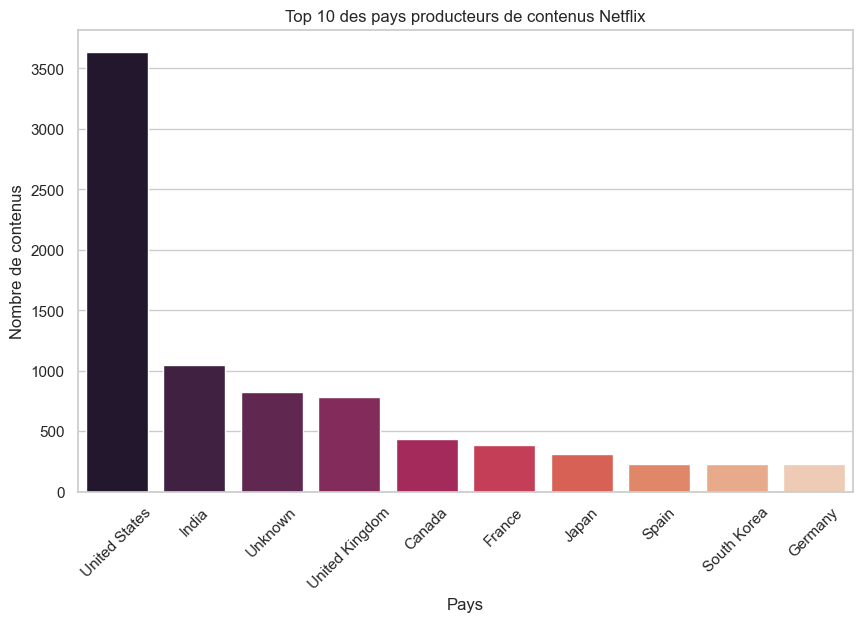
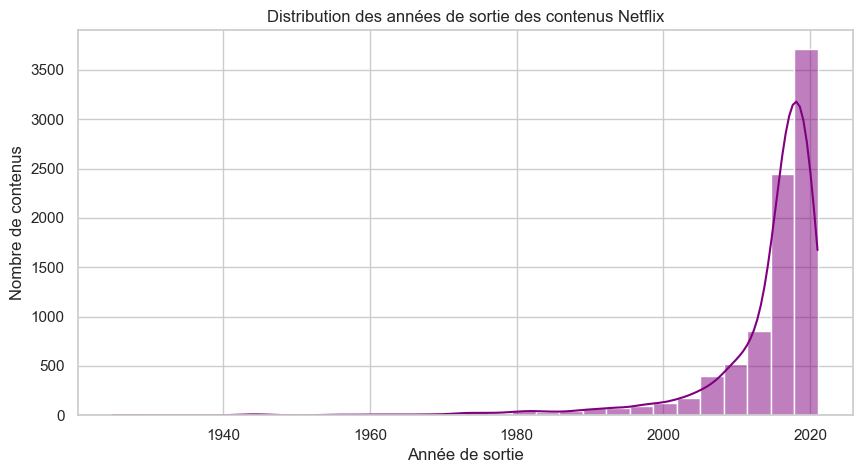
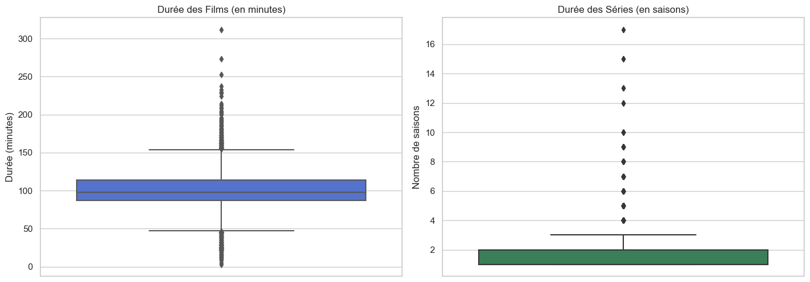
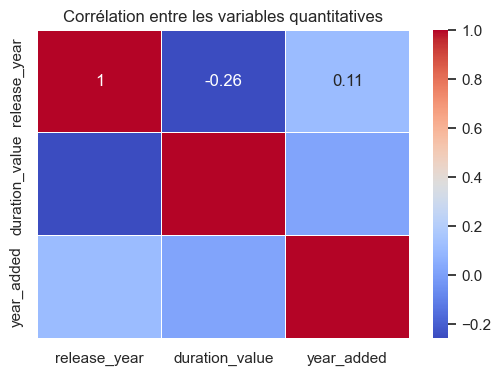
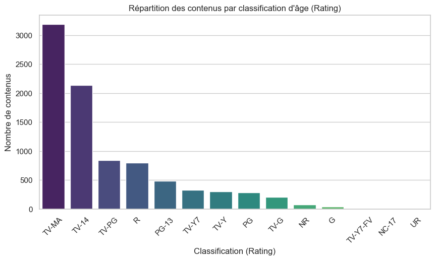
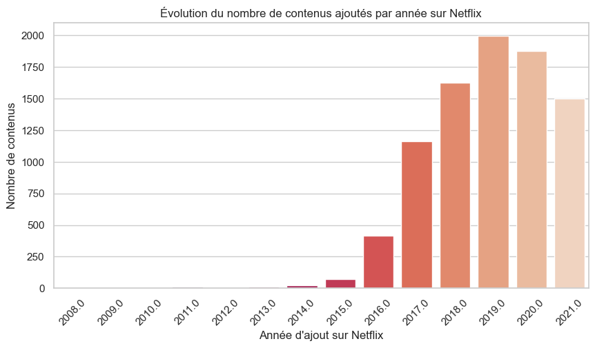

Ce rapport regroupe les principales visualisations réalisées sur le dataset Netflix : comparaison films/séries, pays producteurs, distribution temporelle, durées, corrélations et analyses additionnelles.






